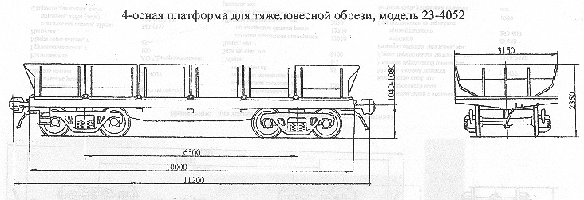

Назначение: для перевозки тяжеловесной обрези, блюмсов, слябов чушкового чугуна
Параметры
| Номер проекта | 4053.00.000 |
| Технические условия | ТУ 24.05.4052-91 |
| Модель вагона | 23-4027 |
| Тип вагона | |
| Изготовитель | АО "Днепровагонмаш" |
| Грузоподъемность, т | 108 |
| Масса тары вагона, т | 33 |
| Нагрузка: статическая осевая, кН(тс) |
345(35,25) |
| погонная, кН/м(тс/м) | 123,4(12,6) |
| Скорость движения, км/ч: по магистральным путям в порожнем состоянии |
100 |
| по путям промышленных предприятий | 30 |
| Габарит | 1-Т |
| База вагона, мм | 6500 |
| Длина, мм: по осям сцепления автосцепок |
11200 |
| по концевым балкам рамы | 10000 |
| Ширина максимальная, мм | 3150 |
| Высота от уровня верха головок рельсов до уровня пола, мм | 1310 |
| Количество осей, шт. | 4 |
| Модель 2-осной тележки | 18-477 |
| Наличие переходной площадки | нет |
| Наличие стояночного тормоза | есть |
| Объем кузова, м3 | 24 |
| Год постановки на серийное производство | 1992 |
| Возможность установки буфера | нет |